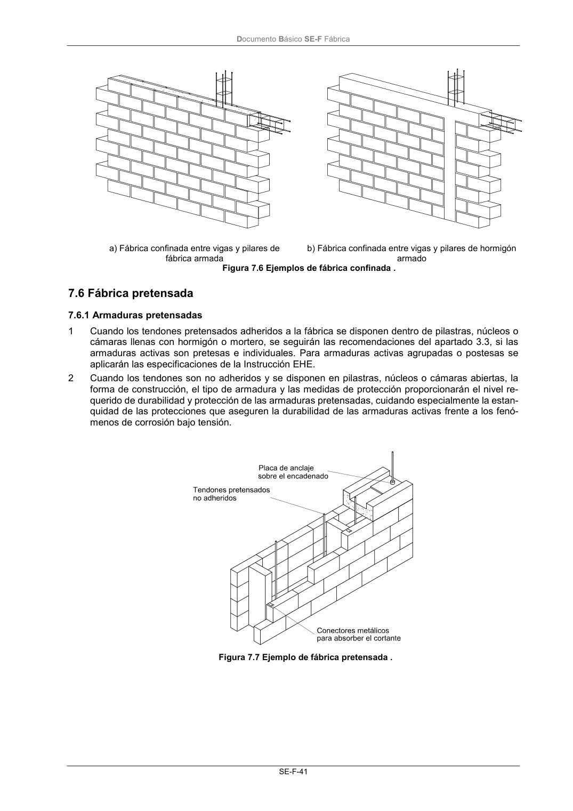

DB-SE-F Fábrica · edición 2019-12-20 · capa oficial
Documento DB-SE-F-oficial · SHA-256 del PDF e3e0805c3b4c307519c26dc34c3fdbf143d842edd013c91b0f52d2c73403d91c
Copia fiel del PDF fuente · Fuente oficial
Ficha de la disposición en la fuente oficial
Formatos: JSON del segmento · Markdown
7.6 Fábrica pretensada 7.6.1 Armaduras pretensadas 7.6.1 Armaduras pretensadas 1 Cuando los tendones pretensados adheridos a la fábrica se disponen dentro de pilastras, núcleos o cámaras llenas con hormigón o mortero, se seguirán las recomendaciones del apartado 3.3, si las armaduras activas son pretesas e individuales. Para armaduras activas agrupadas o postesas se aplicarán las especificaciones de la Instrucción EHE. 2 Cuando los tendones son no adheridos y se disponen en pilastras, núcleos o cámaras abiertas, la forma de construcción, el tipo de armadura y las medidas de protección proporcionarán el nivel re- querido de durabilidad y protección de las armaduras pretensadas, cuidando especialmente la estan- quidad de las protecciones que aseguren la durabilidad de las armaduras activas frente a los fenó- menos de corrosión bajo tensión. Figura 7.7 Ejemplo de fábrica pretensada . Documento Básico SE-F Fábrica SE-F-43
